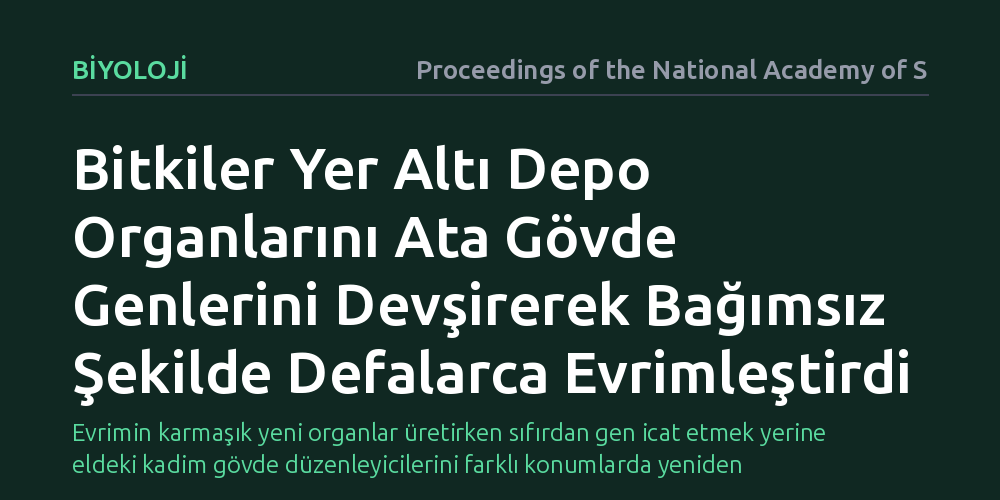

BIYOLOJI · Proceedings of the National Academy of Sciences · 2026-09-09
Araştırmacılar, patates ve rizom gibi yer altı depo organlarının farklı bitki soylarında nasıl defalarca bağımsız olarak evrimleştiğini inceledi. Bulgular, bitkilerin sıfırdan gen üretmek yerine gövde büyümesini yöneten ata gen düzenleyicilerini yer altına uyarlayarak bu organları geliştirdiğini gösterdi.
Evrimin karmaşık yeni organlar üretirken sıfırdan gen icat etmek yerine eldeki kadim gövde düzenleyicilerini farklı konumlarda yeniden kullandığını gösterir.

Patates, tatlı patates ve zencefil gibi bitkilerin yer altında oluşturduğu şişkin yapılar insanlık için vazgeçilmez temel besin kaynaklarıdır. Ancak evrimsel açıdan bakıldığında bu yapılar, bitkilerin kuraklık, don ve yangın gibi zorlu çevre koşullarında hayatta kalmasını ve eşeysiz yolla üreyebilmesini sağlayan kritik adaptasyonlardır.
Biyologları uzun süredir meşgul eden temel soru, bu organların tek bir ortak atadan miras kalmamış olmasıdır. Yumrular, rizomlar ve depo kökleri, çiçekli bitkilerin evrim ağacında birbirinden bağımsız yüzlerce soy hattında tekrar tekrar ortaya çıkmıştır. Doğa, farklı bitkilerde neredeyse aynı işlevi gören bu yer altı kilerini her defasında sıfırdan mı tasarladı, yoksa ortak bir genetik mekanizma mı devreye girdi?
Araştırmacılar bu soruyu yanıtlamak için hem depo organı oluşturan hem de oluşturmayan yakın akraba bitki türlerinin genomlarını ve aktif gen dizilimlerini mercek altına aldı. Protein hizalama ve düzenleyici DNA motif tarama yöntemleri kullanılarak, yer altı organlarının gelişimini tetikleyen genetik ağlar haritalandırıldı.
Farklı dokularda yapılan moleküler analizlerle, yer altında şişkinlik ve nişasta depolanması süreçlerinde hangi transkripsiyon faktörlerinin devreye girdiği belirlendi. Özellikle gövde ucu gelişimini, yaprak düğümlerini ve dallanmayı kontrol ettiği bilinen temel gen ailelerinin bu süreçteki davranışları karşılaştırıldı.
Elde edilen sonuçlar, bitkilerin yer altı depo organlarını geliştirmek için yepyeni genler icat etmediğini ortaya koydu. Bunun yerine, yüz milyonlarca yıldır toprak üstündeki gövdelerin büyümesini ve meristem yönetimini denetleyen ata gen ağlarının "görev devşirdiği" anlaşıldı.
Özellikle gövde mimarisini kuran kilit transkripsiyon faktörlerinin, yer altı sürgün ve kök uçlarında yeniden aktive edildiği görüldü. Çiçeklenmeyi ve sürgün gelişimini kontrol eden sinyal molekülleriyle iş birliği yapan bu ata ağlar, hormon dengelerini değiştirerek dokunun enine genişlemesini ve besin depolamasını tetikliyor. Farklı bitki soyları, aynı ata genetik araç çantasını yer altına yönlendirerek benzer sonuçlara ulaştı.
Bu bulgular evrimsel biyolojideki temel bir ilkeyi pekiştiriyor: Doğal seçilim, karmaşık yeni yapılar inşa ederken sıfırdan genetik devreler kurmak yerine, eldeki güvenilir ve işleyen ata gen ağlarını yeni yerlerde ve yeni zamanlarda çalıştırmayı tercih ediyor. Gövdeyi yöneten kadim mekanizma, yer altına yönlendirildiğinde verimli bir depolama ünitesine dönüşüyor.
Araştırma sadece evrim kuramı açısından değil, tarımsal biyoteknoloji açısından da önemli kapılar aralayabilir. Normalde depo organı oluşturmayan akraba tarım bitkilerinde bu ata düzenleyici genlerin hedeflenerek uyarılması, iklim stresine dayanıklı ve yer altında besin depolayabilen yeni mahsullerin geliştirilmesine katkı sağlayabilir.